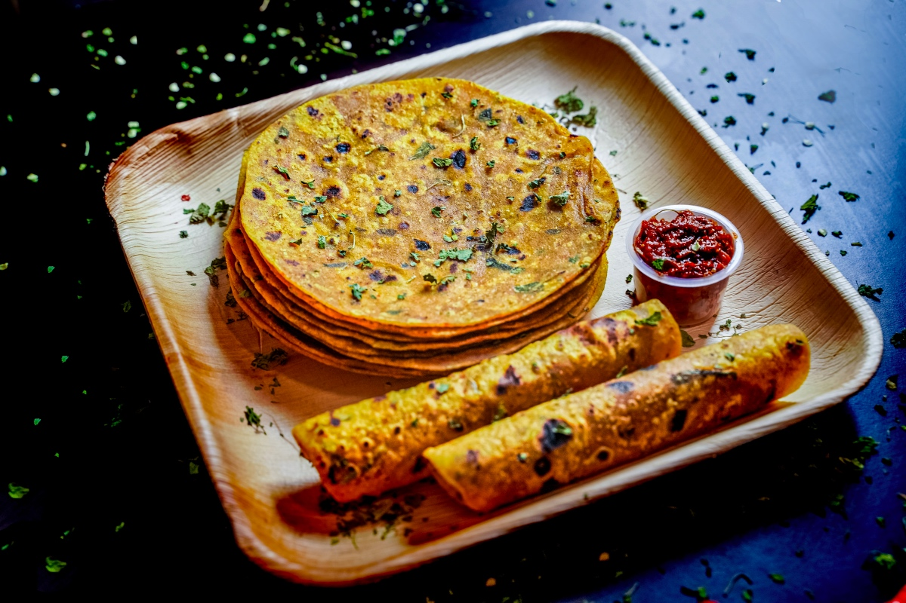

Methi Thepla

Ingredients
- 2 cups whole wheat flour (atta)
- 1 cup fresh fenugreek leaves (methi), chopped
- 1/4 cup besan (gram flour)
- 1/2 tsp turmeric powder
- 1 tsp red chili powder
- 1 tsp coriander powder
- 1/2 tsp cumin seeds
- 1 tsp ginger-garlic paste
- 2 tbsp yogurt
- 1 tbsp oil
- Salt to taste
- Water as needed
- Oil for cooking
Step-by-Step Instructions
Step 1: Prepare Methi
Wash fenugreek leaves thoroughly. Remove thick stems. Chop finely. If using frozen methi, thaw and squeeze out excess water.
Step 2: Make Dough
In a large bowl, mix wheat flour, besan, chopped methi, all spices, ginger-garlic paste, yogurt, and salt. Add 1 tbsp oil and mix well with hands.
Step 3: Knead
Add water little by little and knead into a soft dough. The dough should be softer than regular roti dough. Cover and rest for 15 minutes.
Step 4: Roll Out
Divide dough into small balls. Roll each ball into thin circles (thinner than roti, thicker than papad). Use dry flour for dusting if needed.
Step 5: Cook
Heat tawa on medium flame. Place rolled thepla on it. After 30 seconds, flip it. Apply little oil on both sides and cook till golden brown spots appear.
Step 6: Serve
Stack hot theplas and serve with pickle, yogurt, or potato curry. They stay fresh for 2-3 days, making them perfect for travel.
Pro Tips
- Fresh methi gives better taste than frozen
- Add yogurt for softer theplas
- Roll thin for crispier texture
- Cook on medium heat, not high
- Store in airtight container after cooling
- Great for packed lunches or road trips